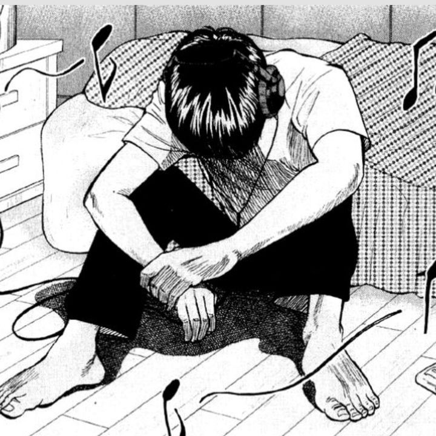

BEM-VINDO AO MEU MUNDO
Aqui compartilho meus gostos, hobbies, interesses.
ExplorarHistórias e personagens que eu gosto.
conta a história de Yukio Tanaka, um adolescente tímido e sem muitos objetivos na vida. Tudo muda quando ele conhece Ryusuke, um guitarrista apaixonado por rock que o apresenta ao mundo da música. Inspirado por esse novo universo, Koyuki aprende a tocar guitarra e começa a fazer parte da banda BECK. Ao lado dos amigos, enfrenta dificuldades, conflitos e desafios para conquistar o sonho de se tornar um músico reconhecido.
conta a história dos irmãos Edward e Alphonse Elric, que, após perderem a mãe, tentam trazê-la de volta à vida usando alquimia, mas o experimento dá errado. Edward perde um braço e uma perna, enquanto Alphonse perde todo o corpo, tendo sua alma presa em uma armadura. Para recuperar seus corpos, os irmãos partem em uma jornada em busca da Pedra Filosofal, um objeto capaz de ultrapassar os limites da alquimia. Durante essa aventura, descobrem segredos sombrios envolvendo o governo, experimentos humanos e criaturas misteriosas chamadas Homúnculos.
onta a história de um homem que, após morrer, renasce como uma garota chamada Tanya Degurechaff em um mundo alternativo marcado por guerras e magia. Apesar de sua aparência infantil, Tanya é extremamente inteligente, fria e estrategista. Para sobreviver e conquistar uma posição de poder no exército, ela utiliza suas habilidades mágicas e sua inteligência em batalhas.
Jogos que gosto de jogar.
é um jogo de estratégia e batalha online em que duas equipes de cinco jogadores se enfrentam para destruir a base inimiga. Cada jogador escolhe um herói com habilidades próprias e funções diferentes, como tanque, mago, atirador e assassino. Durante as partidas, é necessário trabalhar em equipe, derrotar adversários, conquistar objetivos e desenvolver estratégias para vencer. O principal objetivo é proteger sua base e destruir a do inimigo.
é um jogo de tiro em primeira pessoa (FPS) para celular, inspirado em jogos como Counter-Strike. Nele, os jogadores participam de partidas online, enfrentando equipes adversárias em diferentes mapas e modos de jogo. É possível utilizar diversas armas, como pistolas, rifles e facas, além de desenvolver estratégias e melhorar a mira. O objetivo é derrotar os adversários, trabalhar em equipe e conquistar a vitória.
ENTRE EM OUTRO UNIVERSO
Um espaço dedicado para mostra RPGs que eu gosto👍
O Segredo na Ilha é uma campanha de RPG de terror e investigação criada por Cellbit. A história acompanha um grupo que viaja até uma ilha misteriosa para investigar uma mansão e o desaparecimento de um pintor. Durante a investigação, eles descobrem segredos sombrios, acontecimentos sobrenaturais e mistérios que colocam suas vidas em perigo.
é uma campanha de RPG criada e narrada por Mestre Roma, do canal AprendaRPG. A história acompanha um grupo de cinco amigos de infância que estão prestes a terminar o ensino médio e começar uma nova fase da vida. Porém, quando um dos amigos desaparece misteriosamente e parece nunca ter existido, o grupo começa uma investigação para descobrir a verdade. Entre mistérios, viagens pelo tempo, descobertas e acontecimentos sobrenaturais, eles precisam enfrentar situações que podem mudar suas vidas para sempre.
é uma campanha de RPG de fantasia medieval, narrada por Colucci, no universo de The Witcher. A história acompanha um grupo de aventureiros que enfrenta monstros, explora lugares perigosos e se envolve em conflitos e mistérios pelo continente. Durante a jornada, os personagens precisam tomar decisões difíceis, enfrentar ameaças sobrenaturais e lidar com perigos políticos, enquanto buscam sobreviver em um mundo onde nem todos são confiáveis.